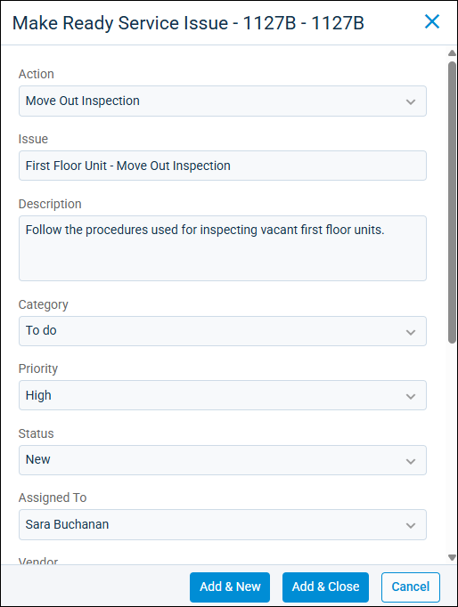

Source: https://rmxhelp.rentmanager.com/Topics/Express/CSH/Make-Ready-Issue.htm
Make Ready Issue (Pop-Up)
The Make Ready page helps streamline the process of preparing vacant units for occupancy and provides an up-to-date visual representation of the unit turnover process. Rent Manager allows you to create issues that can be associated with any stage of the make ready process.
Related Privileges
| Group | Privilege | Column |
|---|---|---|
| Properties/Units | Make ready board | View |
| Make ready process | View, Edit | |
| Service Manager | Issues | Add |
For more information, refer to Control User Access.
To add a service issue to a make ready board process go to  arrow_forward Services arrow_forward Make Ready arrow_forward Make Ready Board. On the desired process, click
arrow_forward Services arrow_forward Make Ready arrow_forward Make Ready Board. On the desired process, click  arrow_forward Add Service Issue.
arrow_forward Add Service Issue.

Field Descriptions
The following fields are available.
| Field | Description |
|---|---|
|
Action |
The name of the action that needs to take place through the make-ready process being addressed by the service issue (e.g., Move Out Inspection, Turnover Activities, Maintenance/Repair, Re-Key Locks). |
|
Issue |
The name of the issue to display on the Issues page. |
|
Description |
Additional information about the issue, such as the work that needs to be completed in order for the issue to be considered resolved. |
|
Category |
The classification that best describes the type of issue being created. |
|
Priority |
The urgency with which the issue needs to be completed. |
|
Status |
The condition that describes the current progress of the issue, such as New or Waiting for Parts. |
|
Assigned To |
The user who is to complete the issue. Related Preferences If a user is set up as the default assignee for service issues in system preferences, their name automatically populates in this field. For more information, refer to Service Issue General Options (System Preferences). |
|
Vendor |
The vendor to complete the work. |
|
Due Date Offset |
The number of days from the start date of the make-ready process until the issue is due. For example, if the make-ready process starts on 10/16, a Due Date Offset of 3 sets the issue due date to 10/19. |
|
Scheduled Date Offset |
The number of days from the start date of the make-ready process until work on the issue is scheduled to begin. For example, if the make-ready process starts on 10/16, a Scheduled Date Offset of 1 means that work on the issue needs to begin on 10/17. |
|
Notify when ready |
Notifies the Assigned To user by email when their issues are available for work. |
Checklists
If multiple tasks are required to complete a single issue, in the Checklist section, you can create new checklist items or add checklist items from a template. You can add as many checklist items as needed. For more information, refer to Add a Checklist Item to an Issue.